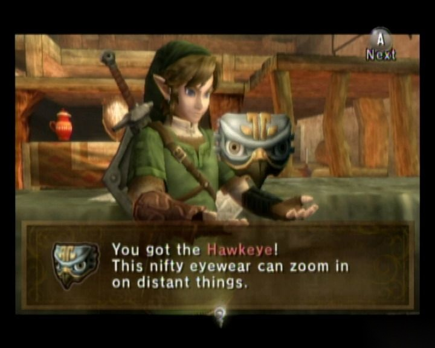
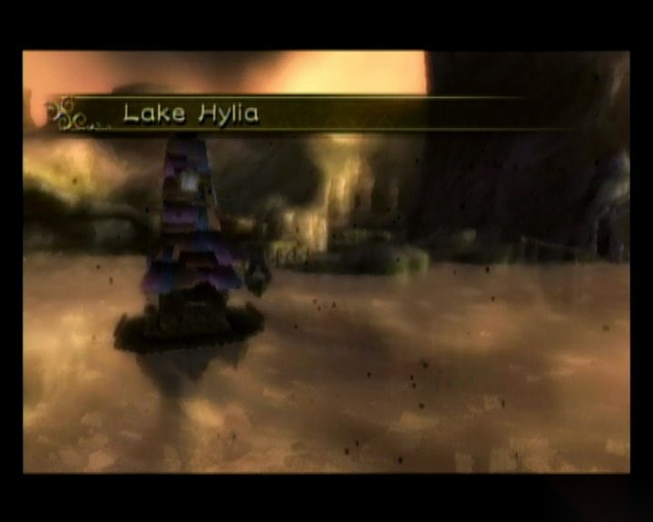
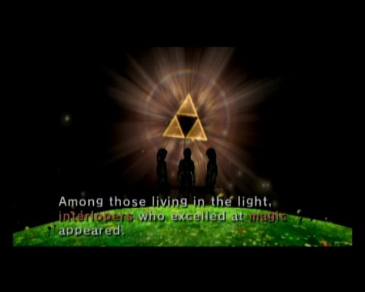
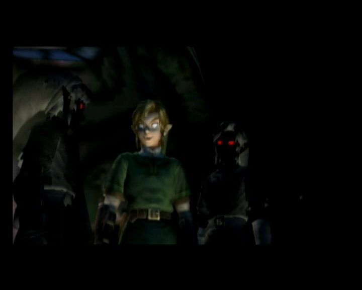
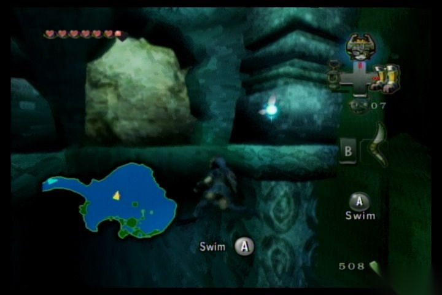
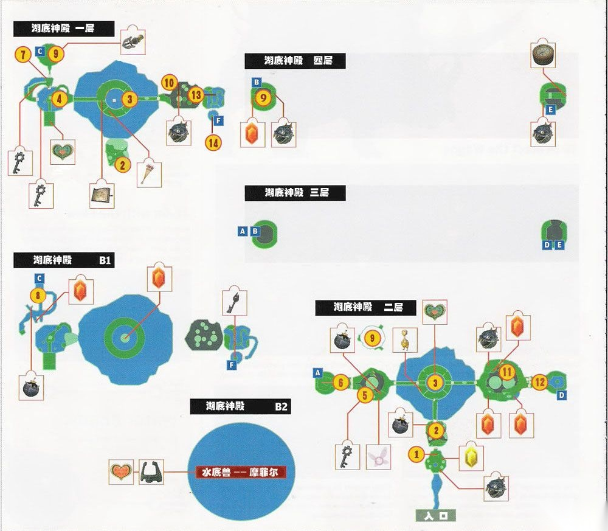
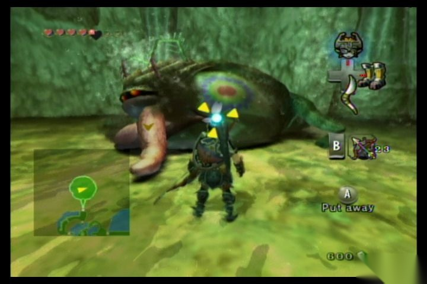

阅读建议
这一页整理为更适合连续阅读的攻略版本。对应章节源文件：zelda-tp-ch3.html 生成。文中配套图片会通过站内本地路径提供，便于稳定阅读。
你可以通过侧边栏保持章节顺序，也可以随时切换中英文版本，对照阅读同一页面。
第 3 章
回到卡卡里科村，林克遇见塔洛，他看到了林克的英雄之弓，又闹着要林克表演箭术，并要林克射中西北山丘房子顶上的一根木棒，就算是救世主。

这一页整理为更适合连续阅读的攻略版本。对应章节源文件：zelda-tp-ch3.html 生成。文中配套图片会通过站内本地路径提供，便于稳定阅读。
你可以通过侧边栏保持章节顺序，也可以随时切换中英文版本，对照阅读同一页面。
回到卡卡里科村，林克遇见塔洛，他看到了林克的英雄之弓，又闹着要林克表演箭术，并要林克射中西北山丘房子顶上的一根木棒，就算是救世主。
要看清那么远的物体也还是有点勉强，林克只好到商店买了一副鹰眼（Hawkeye），有了这个就能够看清楚远处的物体了。林克一箭射中目标，孩子们都非常佩服林克，并给了林克一片 心之碎片 09（射箭的时候不使用鹰眼才能得到心之碎片）。

买到了鹰眼
告别了孩子们，林克来到巴恩斯的炸弹商店，在这可以买到炸弹，利用它林克炸开村口泉水旁的一个石头，出现了一个山洞，林克进入后使用钢之靴潜入水中得到一个 心之碎片 10，出来后在炸开的山洞正上方还有一个巨石，使用炸弹箭将其炸开，会发现另一个 心之碎片 11。林克在村里做好了补给，准备继续去寻找失踪的伊莉娅。
拿到一个心之碎片
走出卡卡里科村，林克来到海拉尔平原，经过艾尔丁大桥，没走多远，第三堵黑暗之墙前出现在林克面前，进入黑暗世界，不远处发现了伊莉娅留下的包裹，随后追随伊莉娅的气味，进入了海拉尔城堡（Hyrule Castle），跟着气味来到一间酒吧前，门是开着的。林克钻了进去，看到了伊莉娅，眼前还有一个陌生种族的病人，听到旁边的卫兵说这个可能是佐拉（Zora）族的后裔，通过他们的谈话还得知海利亚湖（Hylia Lake）是佐拉鱼人出没的地区，林克在桌子的地图上看到了海利亚湖的位置，既然伊莉娅安然无恙，那么就动身前往海利亚湖吧。来到海利亚大桥上，林克发现桥上撒满了火药，原来兽人们早就埋伏在了这里，兽人从两边点燃了火药，林克进退两难，底下又是海利亚湖，看来只有跳下去了，林克迅速把附近的箱子推到桥边，然后爬上去坠入了海利亚湖。
林克上岸后，来到一座奇怪的房屋前，听到房前的人说不远处有一个兽人弓箭手时常骚扰他，林克当然不会放过这个兽人弓箭手，看来这不是一个普通的弓箭手，他召唤来一只巨大的飞龙，骑到飞龙背上与林克周旋，就是这样林克也不会退缩，获胜后米德娜将飞龙驯服了。飞龙带着林克飞进了一个山洞，这里地势险要，稍不注意就会撞到峭壁上。飞出山洞，林克来到了佐拉河上游（Upper Zora's River），这里的河床都结冰了，林克跳下河床，沿着冰川向东前进，随后米德娜会带着林克攀登上北边的冰川，到达冰川顶部后，进入最北边的洞穴。这里又遇到了三个黑暗使者，消灭后出现了这个地区的黑暗空洞。接下来来到已经被冰冻的佐拉王国，米德娜记起了死亡山上的一块炙热的巨石，传送回死亡山，米德娜发动魔法将巨石传送到佐拉王座处，炙热的巨石将整个冰河都融化了，随后佐拉女皇鲁特拉（Rutela）的亡魂出现，她向林克表示感谢，她还请求林克找到并解救王子拉里斯（Ralis），难道就是海拉尔城中那个正被伊莉娅照顾的佐拉人？女皇承诺如果林克完成任务的话，会赐予林克水中呼吸的能力。林克一路返回到海利亚湖，上岸后发现一个洞穴，林克进入后找到最后一个光之精灵，它将最后一个光之容器交给林克。

完全结冰的海利亚湖

死亡山上炙热的巨石，利用它来融化湖水
林克又踏上了收集光之泪的旅程，在精灵之泉的右边道路上不远的地方就有一只，往北尽头处的湖边还有一只，南边的草丛中藏有一只，把草打掉就可以看到。林克向西边游去，在一个小半岛上也有一只，向海利亚湖的南边游去，上岸后林克发现灌木，在遇到阴影怪物的南边，在一排有空隙的石头中，来回跳跃，会发现一支正在挖洞的虫。米德娜告诉他可以在这里召唤之前被收服的飞龙，飞龙带着林克飞进之前的那个洞穴，整个洞穴里一共有四支小虫子，林克用感知可以轻松发现到处乱飞的虫，让飞龙撞击虫子收集光之泪（用 Z 键锁定目标，然后快速抓住，在飞行时不能转身，如果没有抓住所有虫子就回到河的尽头话，就不得不重来一次了）。来到佐拉河上游，林克看到这里的女主人正被虫子吓得发抖，消灭虫子后，林克在河对岸找到嚎叫之岩，记下金狼出现的位置后，林克继续收集光之泪。林克顺着河向佐拉原住地（Zora's Domain）游去，在水域西边的斜坡上有一只，在湖东边靠近雪峰的冰峰道路旁，米德娜会帮助林克攀登上去，途中会有一只虫子，往回走在小梯子处转身向高处的岩石跳上，顺着小路林克来到佐拉王座，虫子就在左边的墙上，林克撞击墙壁惊动虫子，然后杀掉获得光之泪。林克回到佐拉河上游，东南角的水道有两个佐拉亡魂，他们会带林克进入水道，游出来到了海拉尔城的外边，进入城中，来到酒馆外面，打碎角落的箱子就能发现一只虫子。虫子消灭完了，但是光之泪还有一颗，会在哪里呢？此时米德娜会带林克来到最后一只虫子的地方——海利亚湖的正中间。这是一只巨大的母虫，看来她就是罪魁祸首，母虫全身带电的时候，没有办法攻击，林克只好先躲到水里等她冲下来，待其身上电消失后，林克跳到她身上一阵狂咬，没多久虫子就会倒在水里，林克跳到她身上发动群体攻击将其消灭，结束战斗后得到了最后的光之泪。最后一位光之精灵拉内鲁（Lanayru）也变回了原形，他告诉林克，这个世界本来就是黑暗与光明交替的世界，光明离不开黑暗，黑暗也离不开光明，一旦力量失去了平衡，这个世界就会陷入混乱。

光之精灵拉内鲁（Lanayru）向林克讲述这个世界光与影的故事

这是林克？
林克暂时不能完全理解拉内鲁的话，不过林克知道此时他还有重任在身。变回人形的林克从精灵洞窟出来后，一直沿着桥走，到达一间屋子边，在这里花 10 元坐大炮去到湖的上端。上去后找路回到海拉尔城，城外可以遇到金狼，见到它后，不死勇士会再次出现教授林克新的绝技。进城后可以花点时间在王城里晃晃，之前有捉到金色虫子的话还可以去王城城下町的东南街道的虫子屋里换个更大的钱包。之后林克一路来到特尔玛（Telma）的酒馆，终于可以和伊莉娅团聚了，但是她确显得不那么高兴，原来拉里斯的状况很糟糕，不及时救治可能会有生命危险，特尔玛记起卡卡里科村有位医术高明的人，一定就是牧师雷那多了，准备好马车，护送的责任自然落到了林克身上，途中的桥上再次遇到兽人首领阻挡林克一行的去路，下场当然不会很好过，这次他穿上了盔甲，用剑砍是没辙了，不过林克的骑射技术也不是盖的，林克又一次将他打败。之后道路还比较忙碌，林克一边要防止飞鸟放炸弹（要用弓箭将它们清理干净，不然马车会不断的转圈），还要防止马车被兽人射手的火箭烧着（马车着火后，要及时用回力标灭火），最后林克安全将他们送到了卡卡里科村，王子得救了。

护送马车（感觉这里还挺难的，一定要阻止飞鸟放炸弹）
此时佐拉女王应约出现，带着林克来佐拉王的墓穴，将佐拉之铠（Zora Armor）交给了林克，从此林克就可以在水中自由的呼吸行动了（摇杆上代表上浮，下代表下潜，A 加速）。回到村中，来到巴恩斯的炸弹商店，他又研制出了新型的炸弹，这种炸弹可以在水里爆炸（要穿上铁鞋，脚沾地后才能使用），林克买下后马不停蹄地来到海利亚湖（可以炸开墓地湖中的石头走捷径），穿上佐拉之铠跳入湖中。林克游到水底，找到入口，但是被一个巨石堵住了，林克发现底下有一个裂缝，放个水炸弹将其炸开，水柱一下冲了出来，再放个水炸弹，借助水柱的冲力，炸弹会浮上去把巨石炸开，顺着洞一直往里游，林克来到了湖底神殿（Lakebed Temple）。

穿上潜水服，向湖底出发！

湖底神殿迷宫地图
来到海利亚湖底部找到一堵有岩石的墙壁，在下面的水泡中放置一枚水炸弹，随后水泡会把炸弹浮上去并把岩石炸开，然后就可以进入迷宫了。顺着水道一直游到尽头上岸后向北前进，爬上梯子向前跳抓住天花板上的机关打开通向北边的门。
房间 2：放出炸弹箭炸下天花板上的钟乳石使其落下，创造一条前进的路后朝北前进进入房间 3。穿盔甲的怪物，要闪到后面才能伤害它，有了飞爪以后可以直接将它的甲夺走再杀。
房间 3：房间中间有一个可以转动的楼梯，目前没办法控制，只能先从东边或西边的出口出去。一开始从梯子下去，在底部朝右边走，一直走到屋子的南边，然后跳过去抓住黄色的机关，可以转动台阶。再上到上层，到屋子上层的东边，同样抓住机关，这下可以通过底面西边的门来到房间 4 了。注意东北面的箱子里有地图。
房间 4：用炸弹箭射下天花板上的钟乳石后，穿过隧道舷梯向右。通过岩石可以到达中央的石柱，可以看到附近还有一个钟乳石，往那边走，在箱子里能得到一把小钥匙，然后回到房间 3，来到上层西边的门前，得到欧库，打开门进入房间 5。
房间 5：天花板上有钟乳石，打下来后可以借助其爬到墙上的藤蔓上。然后看到开关，跳过去抓住将它打开，接着向西北面移动。在西面林克能看到破损的墙壁， 先不管它，通过门来到南面，在南面的门处的箱子内可以得到小钥匙。有了这个，回到刚才看到的破墙那，炸开就可以通向房间 6。
房间 6：当林克到达水闸控制室这里，顺着屋子中间的洞来到北边。一路向前到达顶部的房间内，爬上梯子打开机关，开始放水。当水流入屋子后，可以直接跳进水中，找到水中心台子上的另一个机关，拉动机关让水流到房间 3 内。通过南面的门在水车下可以发现一个小精灵。
房间 4：房间内的第三层开始转动，跳上去通过北面的门到达房间 7。
房间 7：这里有个装有小钥匙的箱子，拿到后返回房间 4，通过转动的平台到达西面的门，从这里进入房间 7，向前打开门可到达房间 8。
房间 8：在尽头有个岩石阻挡了去路，换上负重靴，下到水中，在石头下安置水炸弹，即可通过并前往房间 9。
房间 9：这里天花板上有一个小 BOSS：青蛙。注意在他跳起来后地上的影子，躲开影子然后攻击他的舌头使其张开嘴，这时再向嘴里射炸弹箭便能将其消灭，并且还能得到道具飞爪（Clawshot）。用飞爪攻击屋子南面门上的机关使门打开后，回到房间 3。
房间 3：用飞爪可以在房间中心的吊灯上发现 心之碎片 13，同样用飞爪也能在箱子内得到 20 卢比。然后到上层的西面使用飞爪击中机关，使楼梯转动，形成一个水渠，让进入房间的流水流向东面的出口。
房间 10：熟练运用飞爪不断爬高，到达上层的出口进入房间 11（另外藤条也可以用飞爪抓）。
房间 11：利用飞爪朝东面移动进入房间 12。
房间 12：一直前进沿着旋梯上到顶部，途中的断处可以用飞爪通过，之后跳到机关上开始放水。这里有个箱子可以用飞爪上去后取得指南针。返回房间 10。用飞爪击打东面的机关，下到下面的平台上，从东面的门到达房间 13。
房间 13：房间 13 有三条渠道，都通往南面。另外这里有 2 条路可以通往房间 14，其中一条过去后发现拿不到钥匙，需要返回再朝左下游找到另一条路，接着可从上方跳到房间 14 并取得大钥匙，然后回到房间 3 水中台子上的通往最终房间的大门。
BOSS 战：水底兽——摩菲尔（Twilit Aquatic——Morpheel）
穿上钢之靴降到水底后会遇到摩菲尔，第一阶段的时候会见到象海葵一样的它，远离周围的触手并保持在飞爪射程之内，然后将在其触手内不断移动的眼球抓出来进行攻击，中途摩菲尔会释放一些炸弹鱼进行干扰，如果抓到炸弹鱼的话要迅速离开其爆炸范围，几次攻击之后摩菲尔会露出本体。此后脱掉钢之靴游到摩菲尔的上方，找准时机锁定 Boss 的额头，用飞爪抓住其头顶处的眼睛后进行攻击，三次之后就可战胜摩菲尔。

湖底神殿迷宫中的机关

BOSS：水底兽——摩菲尔（Twilit Aquatic——Morpheel）第一阶段

BOSS：水底兽——摩菲尔（Twilit Aquatic——Morpheel）现出原形
参考：
这套双语站保持稳定的阅读顺序，便于你按一致的节奏浏览 Twilight Princess 相关内容。
{kind=link}
{kind=link}
{kind=link}
{kind=link}
{kind=link}
{kind=link}